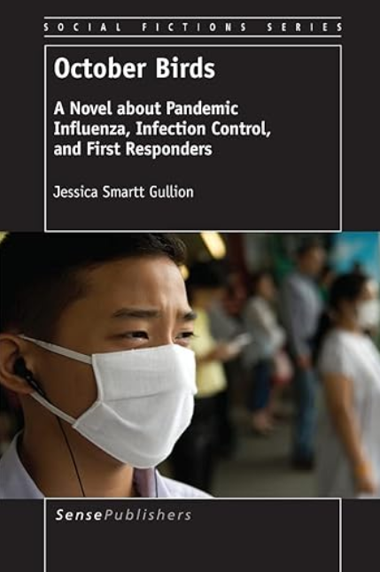

October Birds
En route to a conference, a physician from Jakarta boards a plane to the US. He does not know he is the index patient for the next global influenza pandemic. From this catalyst, thousands of people will get sick, hundreds of people will die. October Birds follows the healthcare and emergency responders in the town of Dalton, Texas, as they cope with the unfolding pandemic. Dr. Eliza Gordon, Chief Epidemiologist for the city, struggles to control the outbreak and be a mother. Infectious disease specialist Dr. Ben Cromwell tries to maintain control of the increasing numbers of patients at Memorial Hospital, while Memorial's infection control specialist fights to limit the spread of the disease to the healthcare workers and other patients. Dalton's emergency manager copes with an ever increasing logistical nightmare, and the incident commander tries to hold everything together. Meanwhile a currendera in town searches for a cure. October Birds is grounded in real-life public health practice, sociological research, and emergency management. It is a/r/tographical research, sociological inquiry within the science/art intersection.